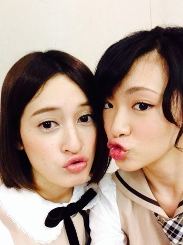
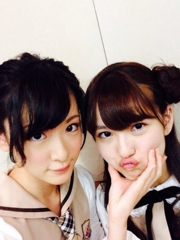

| 2013/11 17 Sun | お茶会わずわずヽ( ・∀・)ﾉ |
今日はガールズルールのイベントがありましたヽ(・∀・)ﾉ
お茶会とサイン会ヽ(・∀・)ﾉ
お茶会は紅茶だと思ってたのですが、緑茶でした。
緑茶会ヽ(・∀・)ﾉ
シンケンすいじゃくしたよ！
シンケンすいじゃくの漢字わからないからカタカナとひらがなミックスです！
サイン会！
ぜひ家宝にしてくださいませ〜ヽ(・∀・)ﾉ
そしてせっちゃんとゆっきーなの卒業式でした！

うちゅ〜♡

むにっとな！
ありがとう。
これからもよろしくね！
ん(´；ω；｀)
さみしいけど自分で決めた道！
しっかり歩くのだよ！
生駒ちゃんもしっかり歩くね。
あと最近髪の毛が結べるようになりました。
ので分かりにくいですが〜結んどります。
ヘアアレンジ〜♡
ここでいきなり質問！
生駒ちゃんはショートとロングどっちがいい？
伸ばすゆっても肩につくぐらいと考えております。
あなたの回答お待ちしていますヽ(・∀・)ﾉ
そんでもってこの前の質問答えて下さってありがとうございますヽ(・∀・)ﾉ
皆さん甘いの好きとストレートとほぼ半分半分でした！
中にはレモンティー派もいらした！
あと！
生駒ちゃんはコーヒー飲めません！
生駒ちゃんコーヒーもブラック？と聞いて来た方がいましたが、生駒ちゃんコーヒーの苦いの苦手です。
コーヒー飲むならシュガースティック10本くらいにミルク7個は入れないと飲めません(´；ω；｀)
だからスタバとかに行ってもココア飲みます。
ココア大好き〜☆

最近はダウンタウンDXなど沢山の番組に出さしていただく機会が沢山あります。
嬉しい事に1人で出さしていただく番組もあります！
収録緊張するけど楽しいです！
でも1人でみんなと離れてやるのはちょっとさみしい

けど沢山勉強になります！
報告を待ってろよ！
あ。
11月22日サキよみジャンBANG!に出演します！
生駒ちゃんはずっと出たいと夢見ていた番組。毎週録画して欠かさずチェックしている番組ヽ(・∀・)ﾉ
出れるってなったとき楽屋でこれでもかと叫びながら走り回りましたヽ(・∀・)ﾉ
みんなうるさくしてごめち〜。
とにかく私はNARUTO好きです。
それだけは皆さんに理解頂きたい。
今週のNARUTOもよかったですヽ(・∀・)ﾉ
という今日11月17日はまこちゃんのお誕生日です！
おめでとうまこちゃんヽ(・∀・)ﾉ
とまぁ内容盛りだくさんなブログ最後まで付き合って下さってありがとうございました

へばなっ！☆
コメント(675)
2013/11/17 22:30